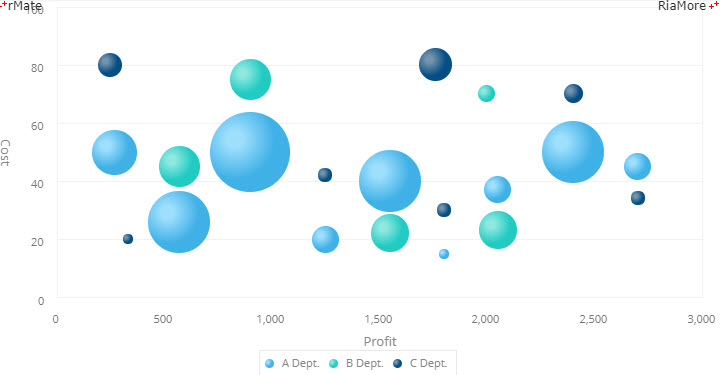

|
알메이트-차트 6.0 사용 설명서
|
차트의 다양한 요소들에 대한 색을 설정하는 방법은 해당 요소의 색 속성에 16 진수 컬러 코드와 필요한 속성값을 지정하는 것입니다. 알메이트 차트에서의 색 설정은 다음과 같이 크게 4 가지로 구분할 수 있습니다.
사용자에 의해서 차트 요소의 색이 직접 지정되지 않으면 알메이트 차트는 시스템에 설정된 기본색을 이용합니다. 기본색은 버전에 따라서 다를 수 있으며, 알메이트 차트 버전 6.0 에서 사용되는 기본색은 아래의 표와 같습니다. 사용자가 색을 지정하지 않을 경우, 아래 표에 나와있는 색 코드가 차트를 생성할 때 순서대로 적용됩니다.
| 기본색 | 라인 차트 기본색 | 컬럼 차트 기본색 | 파이 차트 기본색 | 매트릭스 차트 기본색 |
|---|---|---|---|---|
|
ff812d ffd100 81d733 666666 43cbff 3284c3 d4155b f71075 a48d70 15b671 00998e ce4acc 9a0197 aa94de 8d65d2 e44747 f99b2b fde145 00c574 4c9cff 005d6e ada59d 88827b 584737 36ccda 2aa8b4 8647a7 ba7dda |
03a9f5 fabc05 8e5d9b 00b6aa 88b14b 8a7860 d23579 96d4df 57646d d09d5c 9896a4 f79d2e 55b48b 3991a7 d1af94 dd4760 615c60 5587a2 54bae9 ffc853 e17034 888888 53bb9d 765e8b |
41b2e6 4452a8 fabc05 5587a2 69cabc 6c4a85 8a7860 96d4df f7a33b d8c6aa 49588b 68c0c9 476f80 cc3a5f ffc853 4d4a69 b9d7d7 efc471 eb8952 439896 8ab840 8a8a8a 634265 f38072 |
40b1e6 f97b17 fabb05 20cbc2 074d81 |
5587a2 074d81 20cbc2 f6a54c d1af94 96d4df |
선에 대한 색을 설정하는 방법은 해당 차트 요소의 선 속성에 <Stroke> 노드를 정의하는 것입니다. <Stroke> 노드의 속성은 다음과 같습니다.
| 속성명 | 유효값 (*: 기본값) | 설명 |
|---|---|---|
| color |
#16진수 컬러 코드 표기 기본값: #000000 |
선의 색상을 지정합니다. |
| alpha | 0 과 1(*) 사이의 숫자 |
선 색상의 투명도를 지정합니다. |
| id | 텍스트 |
<Stroke> 객체의 식별자를 지정합니다. |
| weight | 1(*) 이상의 숫자 |
선의 굵기를 지정합니다. |
다음은 <Stroke> 노드를 라인 차트의 <lineStroke> 속성에 정의하여 라인 차트의 선을 설정한 코드와 이를 적용해서 출력한 차트의 예제입니다.
See the CodePen 알메이트 차트 - 선에 대한 색 설정하기
영역에 대한 색을 설정하는 방법은 해당 차트 요소의 영역 속성에 <SolidColor> 노드를 정의하는 것입니다. <SolidColor> 노드의 속성은 다음과 같습니다.
| 속성명 | 유효값 (*: 기본값) | 설명 |
|---|---|---|
| color |
#16진수 컬러 코드 표기 기본값: #000000 |
영역의 색상을 지정합니다. |
| alpha | 0 과 1(*) 사이의 숫자 |
영역 색상의 투명도를 지정합니다. |
| id | 텍스트 |
<SolidColor> 객체의 식별자를 지정합니다. |
다음은 <SolidColor> 노드를 라인 차트의 <fills> 속성에 정의하여 라인 차트의 데이터 아이템 렌더러(CircleItemRenderer)의 영역에 색을 채우는 코드와 이를 적용해서 출력한 차트의 예제입니다. 이 예제에서는 전체 12 개의 데이터 아이템에 대한 색 채우기를 위해 3 가지 종류의 색이 번갈아 가면서 사용됩니다.
See the CodePen 알메이트 차트 - 영역에 대한 색 설정하기
영역에 색을 채우기 위해 선형(Linear) 그라디언트를 적용할 수 있습니다. 선형 그라디언트가 적용 가능한 차트의 요소는 <AxisRange> 와 <CircularGauge> 입니다. <LinearGradient> 노드의 속성은 다음과 같습니다.
| 속성명 | 유효값 (*: 기본값) | 설명 |
|---|---|---|
| entries |
그라디언트 요소를 지정합니다. |
|
| angle | 0(*) 과 360 사이의 숫자 |
그라디언트 효과의 방향을 지정합니다. |
| id | 텍스트 |
<LinearGradient> 객체의 식별자를 지정합니다. |
다음은 원형 게이지의 프레임에 선형 그라디언트 색을 설정하는 코드와 이를 적용해서 출력한 차트의 예입니다. .
See the CodePen 알메이트 차트 - 영역에 대한 선형(Linear) 그라디언트 색 설정하기
영역에 색을 채우기 위해 방사형(Radial) 그라디언트를 적용할 수 있습니다. 방사형 그라디언트가 적용 가능한 차트의 요소는 <AxisRange> 와 <CircularGauge> 입니다. <RadialGradient> 노드의 속성은 다음과 같습니다.
| 속성명 | 유효값 (*: 기본값) | 설명 |
|---|---|---|
| entries |
그라디언트 요소를 지정합니다. |
|
| angle | 0(*) 과 360 사이의 숫자 |
중심에서 그라디언트 초점까지의 상대 위치를 지정합니다. |
| focalPointRatio |
-1 과 1 사이의 숫자 기본값: 0 |
중심에서 그라디언트 초점까지의 거리를 지정합니다. 값이 양수이면 중심에서 오른쪽, 값이 음수이면 중심에서 왼쪽에 그라디언트 초점이 존재하게됩니다. 예를 들어, 값이 |
| id | 텍스트 |
<RadialGradient> 객체의 식별자를 지정합니다. |
다음은 버블 차트의 버블에 방사형 그라디언트 색을 설정하는 코드와 이를 적용해서 출력한 차트의 예입니다.
See the CodePen 알메이트 차트 - 영역에 대한 방사형(Radial) 그라디언트 색 설정하기
데이터 아이템에 대한 채우기 및 테두리 선을 데이터 값에 따라서 사용자가 원하는 색으로 지정할 수 있습니다. 데이터 아이템의 채우기 색에 대한 사용자 정의 함수명은 fillJsFunction 속성에, 데이터 아이템의 테두리 선의 색에 대한 사용자 정의 함수명은 strokeJsFunction 속성에 설정합니다. 다음은 컬럼 차트에서 막대의 채우기 색과 테두리 색을 데이터 값에 따라서 다르게 표시하는 예제입니다.
See the CodePen 알메이트 차트 - 사용자 정의 색 지정